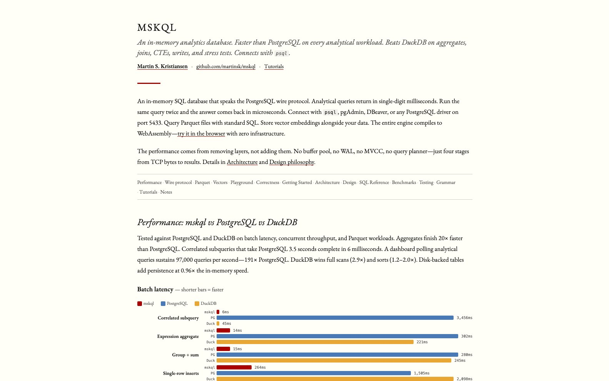
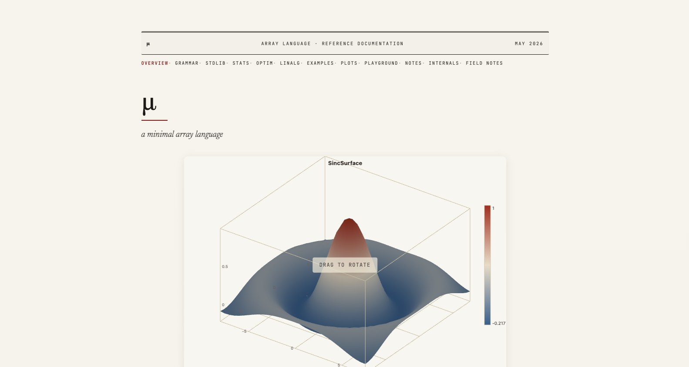
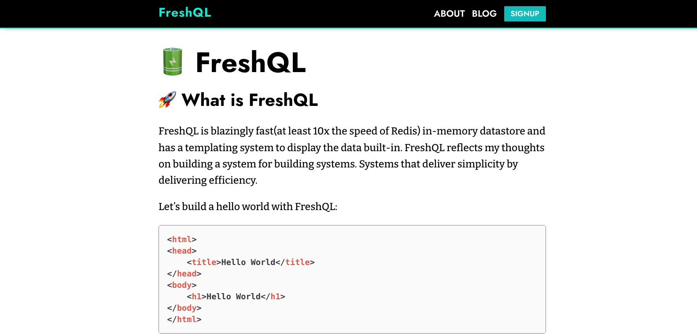
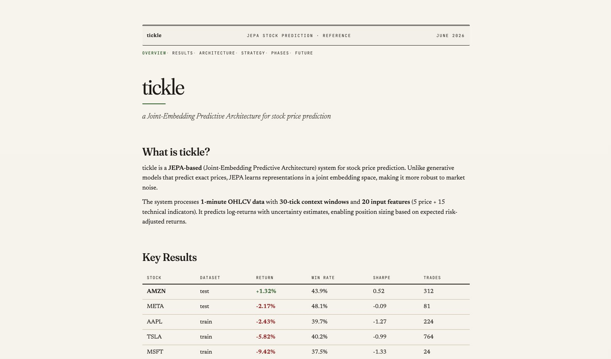
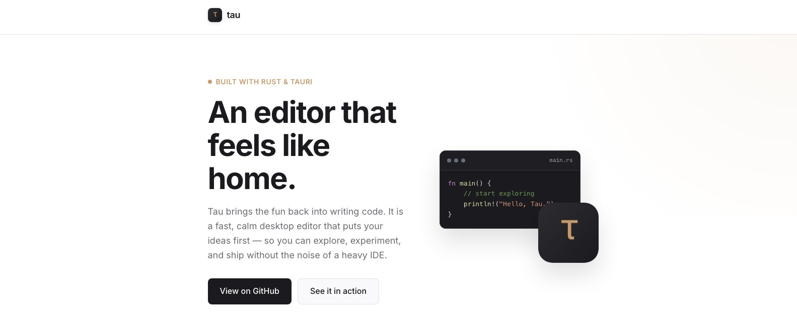

Martin S. Kristiansen
Systems & LanguagesI lead engineering teams and build the systems myself — fast databases, small languages, and the tools around them, mostly in C.
Backstory
I'm an engineering leader and systems builder — Director of Engineering at Amazon and Twitch, CTO of Mova AI, and a multiple-time founder. I studied computer science at Aarhus University, with published research in HMM optimization, and I still learn the same way I did back then: by building — databases, languages, ML systems.
I care about performance as a consequence of clarity. When the data structures and the control flow are right, the program usually ends up fast anyway. WebAssembly has become a favorite target because it forces the same discipline: no giant runtime, no hidden allocations, just the code that needs to run. I run teams the same way I write software: small, fast, minimal ceremony.
On the lookout for
- Fast, simple systems software — query engines, languages, and storage.
- Minimal abstractions that compose without surprising you later.
- WebAssembly as a real deployment target, not just a demo.
- Tools that remove accidental complexity from building and running software.
Writing
Optimizing a GPT-2-Class Transformer on a GPU
From a naive CUDA port to past torch.compile — 49× on a 3080 Ti, then 136K tokens/s.
Optimizing a Tiny Transformer on CPU
Algebraic rewrites, fusion, and an LP solver that beat human tuning — 2.44× end-to-end.
Understanding Financial Markets
Kelly sizing, Markowitz portfolios, and related ideas.
Writing a Webserver in C
A minimal, event-driven receive loop built on poll(2).
Projects

mskql
An in-memory analytics database that speaks the PostgreSQL wire protocol.
Analytical queries return in single-digit milliseconds — ~97K queries/second versus
PostgreSQL's 508 on concurrent load, and 20× faster on aggregates. Connect with
psql, pgAdmin, or any PostgreSQL driver.

μ
A minimal array language in the tradition of APL and K — ~1,000 lines of C, no dynamic memory allocation. Right-to-left evaluation with single-character verbs and higher-order adverbs. Ships with statistics, financial functions, CSV parsing, and SVG/canvas plotting. Runs entirely in the browser via WebAssembly.

FreshQL
An in-memory key-value store with an HTTP templating engine built in — 10× the speed of Redis. Templates bind directly to URL parameters and live database values; store an HTML template at a path and it serves instantly. Written in C; the storage engine is the direct predecessor of mskql.

tickle
A JEPA-based system for stock price prediction — learns joint embeddings rather than exact prices, making it robust to market noise. Processes 1-minute OHLCV data with 30-tick context windows and 20 input features. Predicts log-returns with uncertainty estimates and sizes positions with a Kelly-inspired rule, so correctly-sized bets pay off even below a 50% hit rate — on an AMZN backtest, the strategy returned +1.32% despite a 43.9% win rate.

tau
A proof-of-concept desktop code editor built to explore what an editor with a coding agent built in could look like. Browse a project in a sidebar, open files in tabs and split panes, edit with Monaco, run shell tasks in a built-in terminal, and drive git operations without leaving the app.